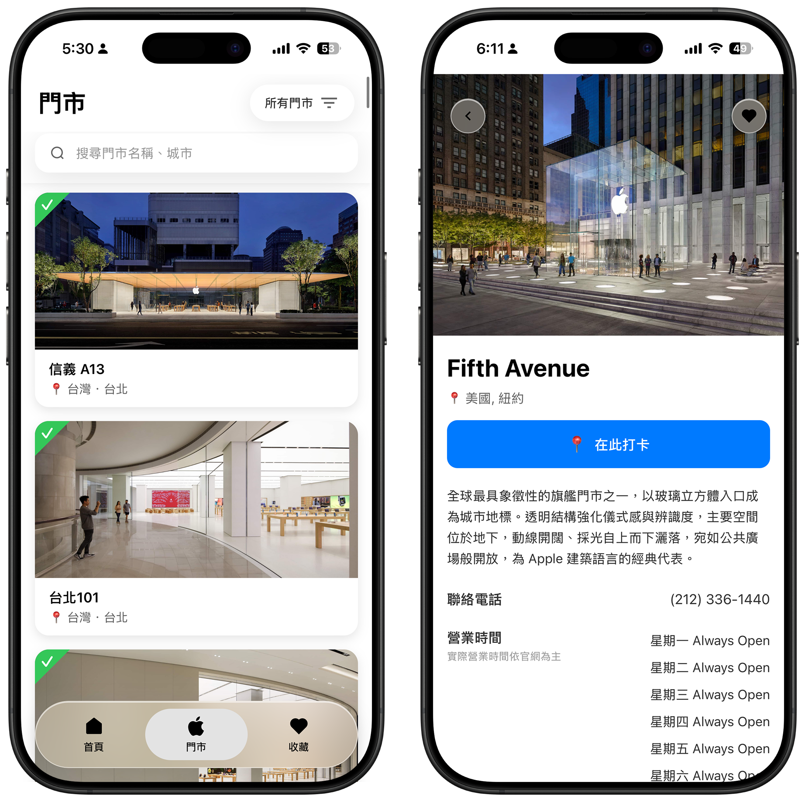
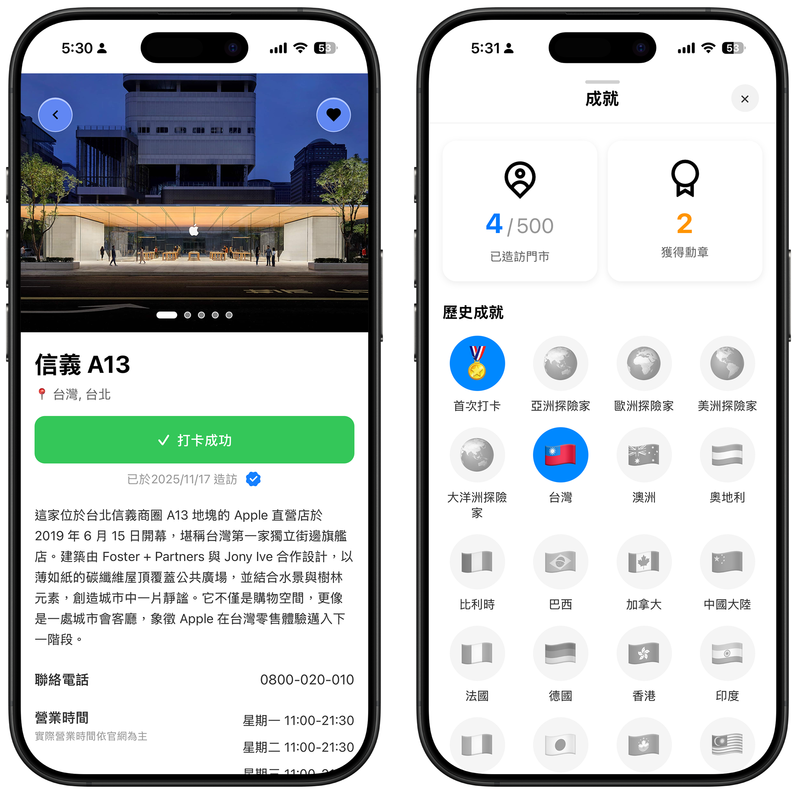
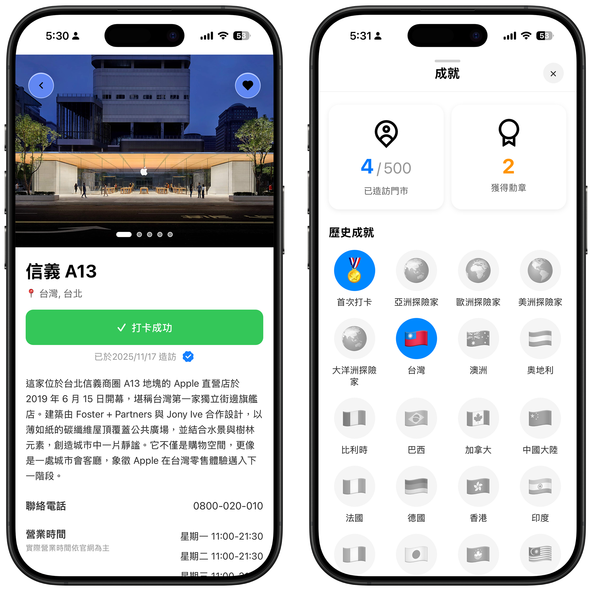
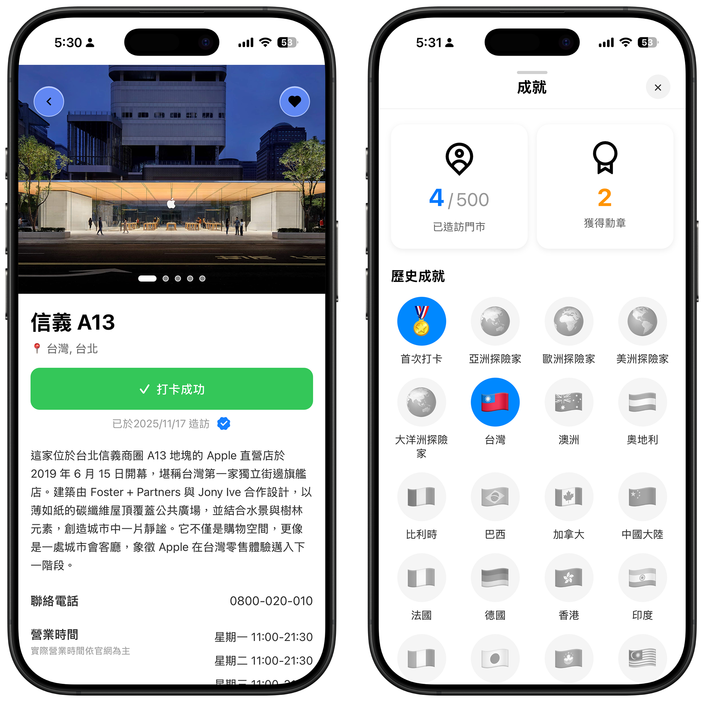
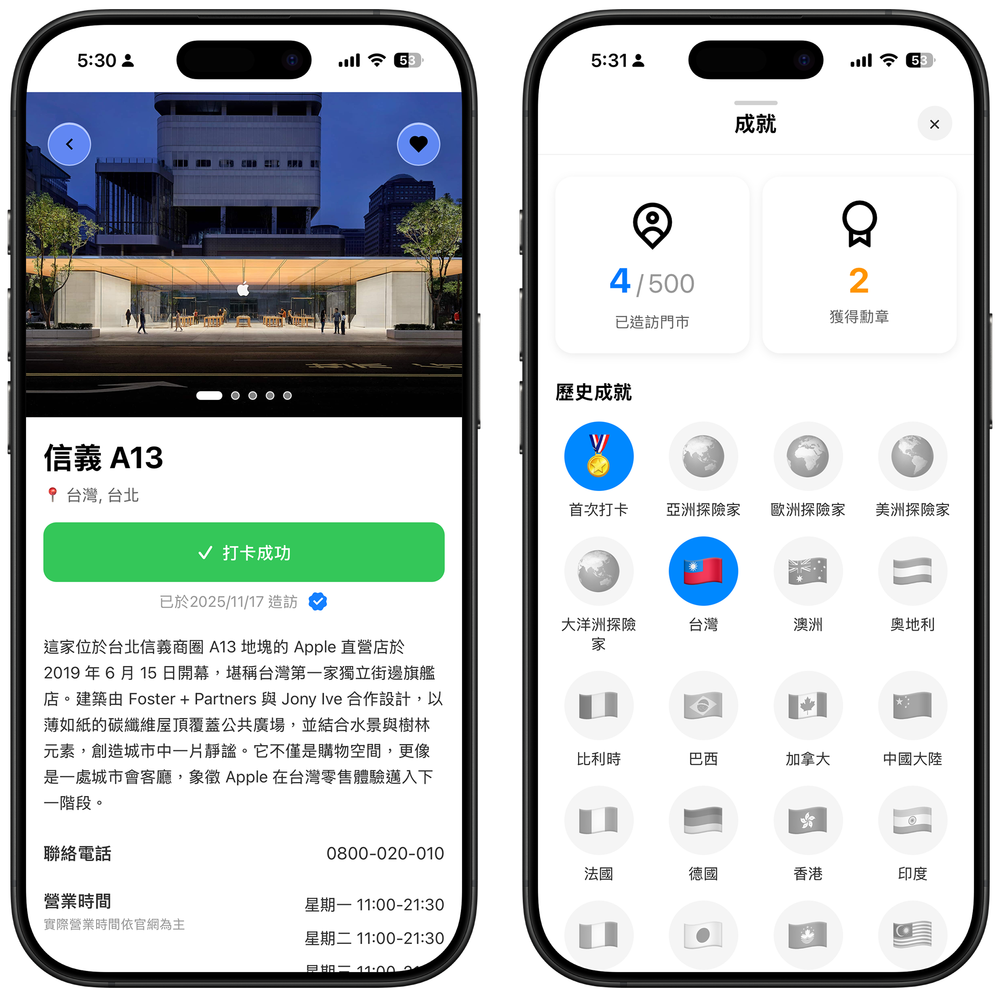

 


門市查找
快速搜尋全球 Apple Store，查看建築資訊與地圖位置。
❤️ 收藏清單
建立你的 Apple Store 收藏清單，紀錄每段旅程足跡。
🏅 打卡成就
實地造訪門市後打卡，累積勳章與設計旅程成就。
在旅行中，欣賞建築設計之美
AStore Trip 是一款以設計與建築為靈感的旅遊 App， 收錄全球 Apple 直營門市資訊，讓你在旅行中探索每一座 城市的 Apple Store，收藏打卡並欣賞其獨特設計之美。

快速搜尋全球 Apple Store，查看建築資訊與地圖位置。
建立你的 Apple Store 收藏清單，紀錄每段旅程足跡。
實地造訪門市後打卡，累積勳章與設計旅程成就。